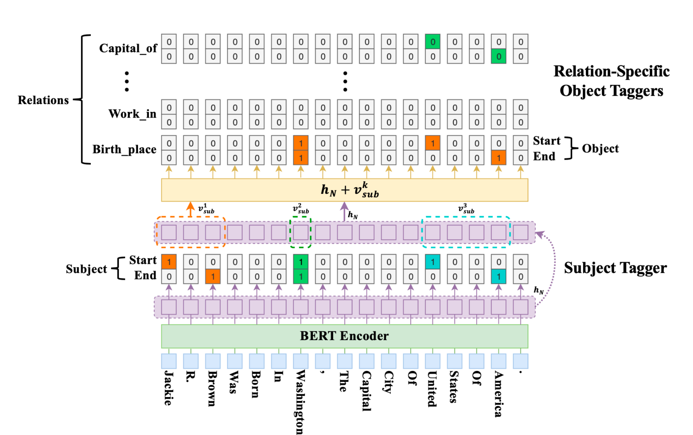
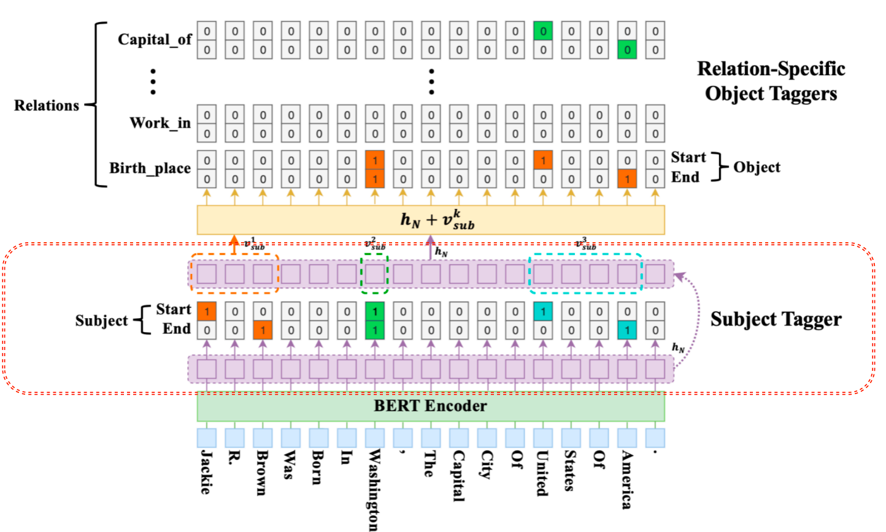
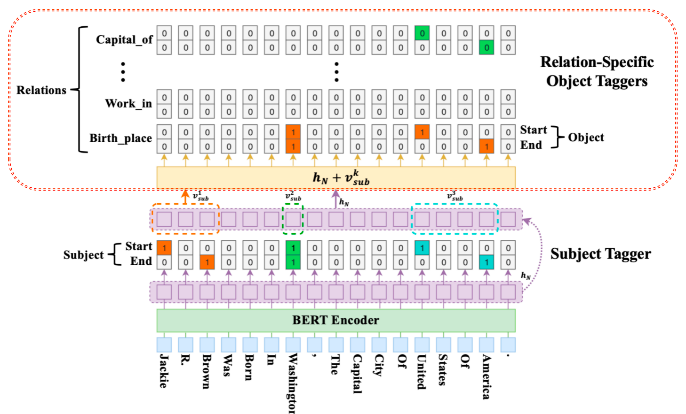
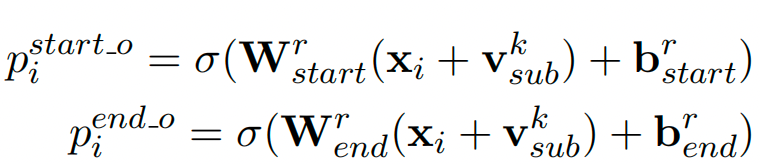

4.2 Casrel模型架构解析
Casrel模型介绍¶
学习目标¶
- 理解Casrel算法思想
- 掌握Casrel模型架构
- 掌握Casrel模型解决的问题
Casrel算法思想¶
- Casrel是2020 ACL 上的实体关系抽取的一篇论文，该论文的主要解决的问题为关系三元组重叠问题.
- CasRel 本质上是基于参数共享的联合实体关系抽取方法.
Casrel模型架构¶

- CASREL框架抽取三元组(subject, relation, object)主要包含两个步骤，三个部分
- 两个步骤：
- 第一步要识别出句子中的 subject .
- 第二部要根据识别出的 subject, 识别出所有有可能的 relation 以及对应的 object.
- 三个部分：
- 编码器部分: 可以替换为不同的编码框架，主要对句子中的词进行编码，论文最终以BERT为主，效果不错.
- 解码器—-头实体识别部分：目的是识别出句子中的 subject.
- 解码器—-关系与尾实体联合识别部分：根据 subject，寻找可能的 relation 和 object.
模型细节¶
头实体识别部分¶

- CasRel的头实体识别层直接对编码层的结果进行解码，去识别所有可能的头实体. 这里CasRel是识别头实体span，也就是start和end位置，所以它采用的是二分类.

- 因此，模型本身很简单：
- 首先，利用一个线性层➕一个sigmoid激活函数判断每个token是不是头实体的开始token或结束token
- 然后，利用最近匹配原则将识别到的start和end配对获得候选头实体集合.
关系、尾实体联合识别部分¶

- 识别头实体后就要进行关系和尾实体的联合识别了. 这里每一层尾实体识别层的结构其实与头实体识别层是一样的，不同主要在于输入：
- 解码的时候比subject不仅仅考虑了BERT编码的隐层向量， 还考虑了识别出来的subject特征，即下图.
- vsub 代表 subject 特征向量，若存在多个词，将其取向量平均，hn代表 BERT 编码向量.
- 对于识别出来的每一个subject, 对应的每一种关系会解码出其 object 的 start 和 end 索引位置，与 Subject 类似，公式如下：

模型结果：¶
- 以图中的例子解析下模型最终的预测结果，图中的第一个 subject 的过程，即 Jackie R. Brown，对于这个subject，在关系 Birth_place 中识别出了两个 object，即 Washington 和 United States Of America，而在其他的关系中未曾识别出相应的 object. 当对 Washington 这个 subject 解码时，仅仅在 Capital_of 的关系中识别出对应的 object: United States Of America.
Casrel模型解决的问题¶
- 由上述模型结果得出结论：Casrel模型可以解决最开始提到关系抽取中的 SEO 和 EPO 的重叠问题. 这也是我们本次项目研究问题的重点，解决文本中多元关系问题.
小结总结：¶
- Casrel算法思想
- Casrel是2020ACL 上的实体关系抽取的一篇论文，该论文的主要解决的问题为关系三元组重叠问题.
- CasRel 本质上是基于参数共享的联合实体关系抽取方法，它通常被大家称作层叠指针网络.
- Casrel模型架构
- CASREL框架抽取三元组(subject, relation, object)主要包含两个步骤，三个部分
- 两个步骤：
- 第一步要识别出句子中的 subject .
- 第二部要根据识别出的 subject, 识别出所有有可能的 relation 以及对应的 object.
- 三个部分：
- 编码器部分: 可以替换为不同的编码框架，主要对句子中的词进行编码，论文最终以BERT为主，效果很强.
- 解码器—-头实体识别部分：目的是识别出句子中的 subject.
- 解码器—-关系与尾实体联合识别部分：根据 subject，寻找可能的 relation 和 object.
- 两个步骤：
- CASREL框架抽取三元组(subject, relation, object)主要包含两个步骤，三个部分
- Casrel模型解决的问题
- Casrel模型可以解决关系抽取中的 SEO 和 EPO 的重叠问题.